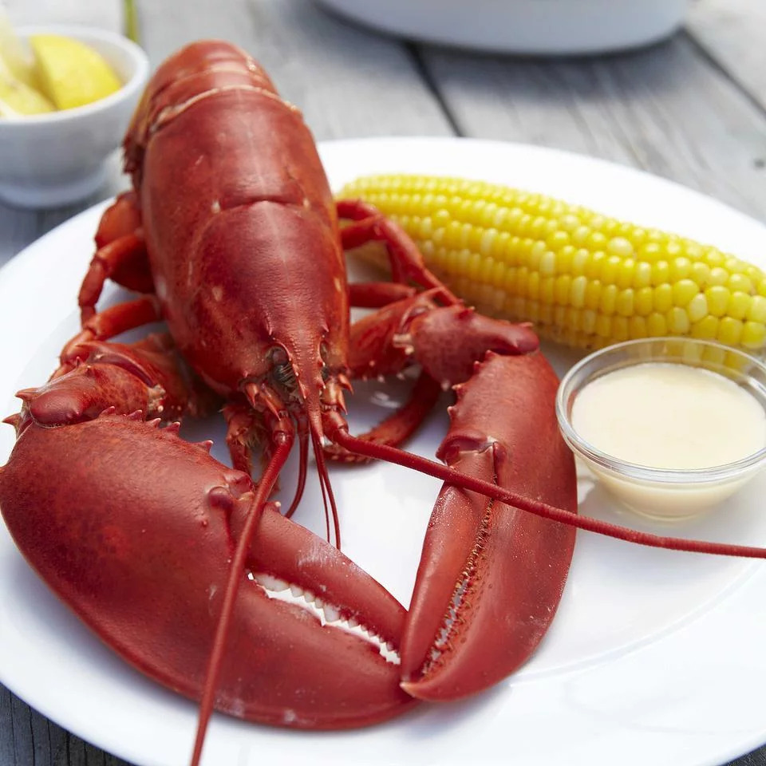

Boiled Lobster Recipe

Description
Boiled lobster is a comfort food in my family that is typically served plain with a melted butter dipping sauce as a side dish.
Ingredients
- 1 1-2 pound lobster
- 1 tablespoon butter
Steps
- Fill a large pot about halfway full with water. Cover the pot, and bring the water to a boil.
- Once the water has reached a boil, place lobster into pot. Cover, set medium heat and let steam for approximately 5 minutes,
or until the lobster turns bright red and the tail is firm and opaque when checked.
- Remove the lobster from the pot and serve with melted butter.
Return to Odin Recipes